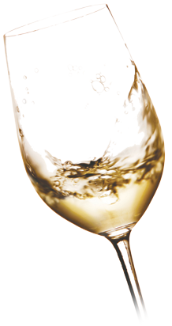
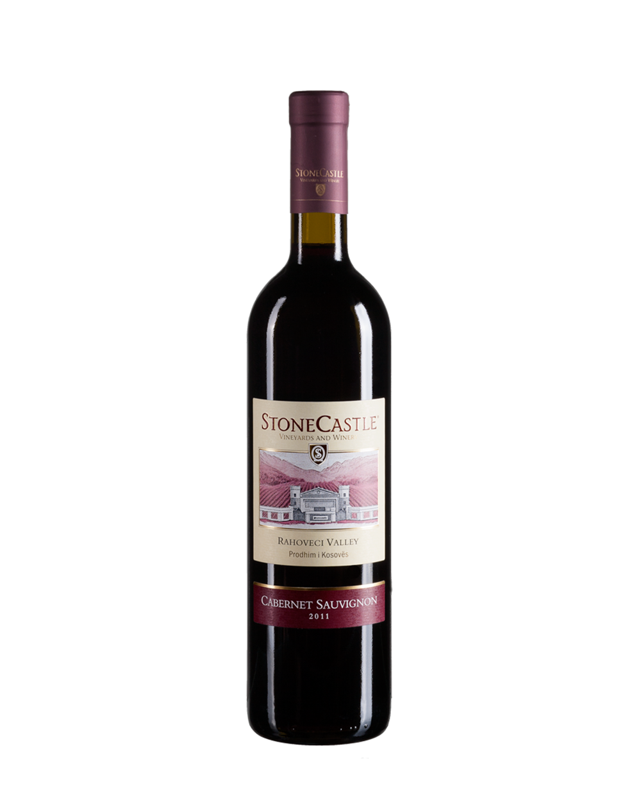
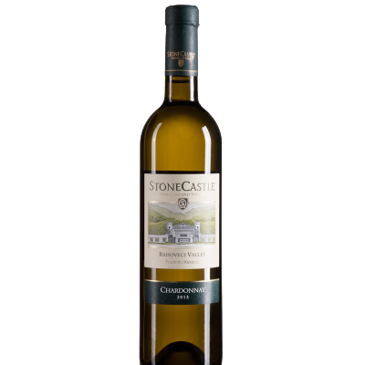
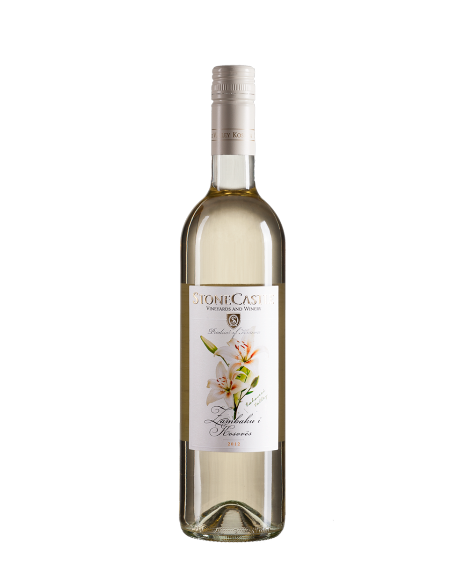

DrinkFest
|  | Verë e kuqe! Është tipi i verës që prodhohet nga rrushi i kuq. Përmban gjithashtu antioksidantë të tjerë, mirëpo një përbërës i rëndësishëm është flavonoidi. Në fakt ngjyra e kësaj vere mund edhe të ndryshoj. |
|  | Verë e bardhë! Prodhohen nga përzierja e varieteteve të rrushit të bardhë. Zakonisht ka prej 11% deri në 13.5% alkool. Shërbehet në temperaturë 12ᵒ-13ᵒC. |
|  | Verë e ëmbël! Është verë e bardhë gjysmë e ëmbël cilësore, me prejardhje të mbrojtur gjeografike. Prodhuar nga rrushi Riesling dhe Rhine Riesling të kultivuar në vreshtat e Stone Castle-s në Rahovec. Vera ka ngjyrë të gjelbër në të artë. Shija e ëmbël dhe aroma e saj të kujtojnë lule zambakun e Kosovës. |